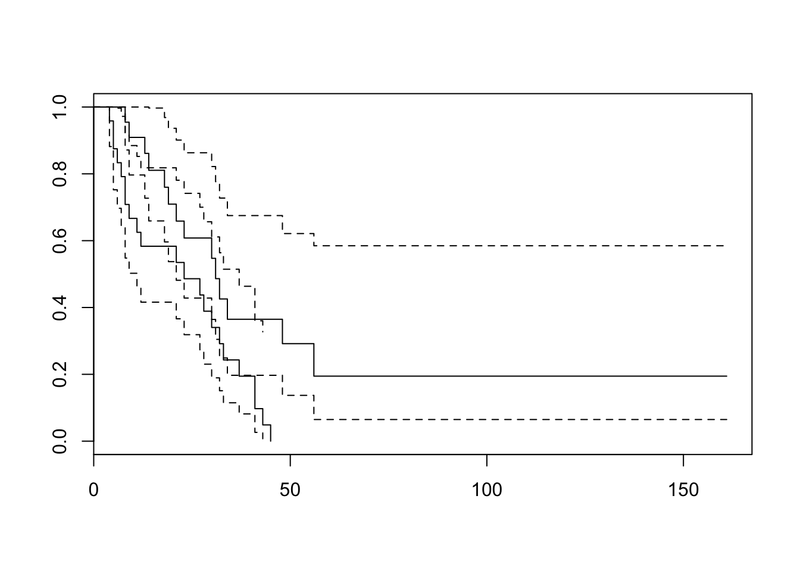

6 Extending R with packages
R has no built-in functions for survival analysis but, because it is an extensible system, survival analysis is
available as an add-in package. You can find a list of add-in packages at the R website.
Add-in packages are installed from the Internet. There are a series of R functions that enable you to download and install add-in packages.
The survival package adds functions to R that enable it to analyse survival data. This package may be downloaded and installed using install.packages("survival") or from the Packages or Packages & Data menu if you are using a GUI version of R.
Packages are loaded into R as they are needed using the library() function. Start R and load the survival package:
library(survival)Before we go any further we should retrieve a dataset:
ca <- read.table("ca.dat", header = TRUE)
attach(ca)The columns in this dataset on the survival of cancer patients in two different treatment groups are as follows:
| time | Survival or censoring time (months) |
| status | Censoring status (1=dead, 0=censored) |
| group | Treatment group (1 / 2) |
We next need to create a survival object from the time and status variables using the Surv() function:
response <- Surv(time, status)We can then specify the model for the survival analysis. In this case we state that survival (response) is dependent upon the treatment group:
ca.surv <- survfit(response ~ group)The summary() function applied to a survfit object lists the survival probabilities at each time point with 95% confidence intervals:
summary(ca.surv)## Call: survfit(formula = response ~ group)
##
## group=1
## time n.risk n.event survival std.err lower 95% CI upper 95% CI
## 8 22 1 0.955 0.0444 0.8714 1.000
## 9 21 1 0.909 0.0613 0.7966 1.000
## 13 19 1 0.861 0.0744 0.7270 1.000
## 14 17 1 0.811 0.0856 0.6591 0.997
## 18 16 1 0.760 0.0940 0.5963 0.968
## 19 15 1 0.709 0.1005 0.5373 0.936
## 21 14 1 0.659 0.1053 0.4814 0.901
## 23 13 1 0.608 0.1087 0.4282 0.863
## 30 10 1 0.547 0.1136 0.3643 0.822
## 31 9 1 0.486 0.1161 0.3046 0.776
## 32 8 1 0.426 0.1164 0.2489 0.727
## 34 7 1 0.365 0.1146 0.1971 0.675
## 48 5 1 0.292 0.1125 0.1371 0.621
## 56 3 1 0.195 0.1092 0.0647 0.585
##
## group=2
## time n.risk n.event survival std.err lower 95% CI upper 95% CI
## 4 24 1 0.9583 0.0408 0.88163 1.000
## 5 23 2 0.8750 0.0675 0.75221 1.000
## 6 21 1 0.8333 0.0761 0.69681 0.997
## 7 20 1 0.7917 0.0829 0.64478 0.972
## 8 19 2 0.7083 0.0928 0.54795 0.916
## 9 17 1 0.6667 0.0962 0.50240 0.885
## 11 16 1 0.6250 0.0988 0.45845 0.852
## 12 15 1 0.5833 0.1006 0.41598 0.818
## 21 12 1 0.5347 0.1033 0.36614 0.781
## 23 11 1 0.4861 0.1047 0.31866 0.742
## 27 10 1 0.4375 0.1049 0.27340 0.700
## 28 9 1 0.3889 0.1039 0.23032 0.657
## 30 8 1 0.3403 0.1017 0.18945 0.611
## 32 7 1 0.2917 0.0981 0.15088 0.564
## 33 6 1 0.2431 0.0930 0.11481 0.515
## 37 5 1 0.1944 0.0862 0.08157 0.464
## 41 4 2 0.0972 0.0650 0.02624 0.360
## 43 2 1 0.0486 0.0473 0.00722 0.327
## 45 1 1 0.0000 NaN NA NAPrinting the ca.surv object provides another view of the results:
ca.surv## Call: survfit(formula = response ~ group)
##
## n events median 0.95LCL 0.95UCL
## group=1 22 14 31 21 NA
## group=2 24 22 23 11 37The plot() function with a survfit object displays the survival curves:
plot(ca.surv, xlab = "Months", ylab = "Survival")
We can make it easier to distinguish between the two lines by specifying a width for each line using thelwd
parameter of the plot() function:
plot(ca.surv, xlab = "Months", ylab = "Survival", lwd = c(1, 2))
It would also be useful to add a legend:
legend(125, 1, names(ca.surv$strata), lwd = c(1, 2))
If there is only one survival curve to plot then plotting a survfit object will plot the survival curve with 95% confidence limits. You can specify that confidence limits should be plotted when there is more than one survival curve but the results can be disappointing:
plot(ca.surv, conf.int = TRUE)
Plots can be improved by specifying different colours for each curve:
plot(ca.surv, conf.int = TRUE, col = c("red", "darkgreen"))
We can perform a formal test of the two survival times using the survdiff() function:
survdiff(response ~ group)## Call:
## survdiff(formula = response ~ group)
##
## N Observed Expected (O-E)^2/E (O-E)^2/V
## group=1 22 14 21.1 2.38 6.26
## group=2 24 22 14.9 3.36 6.26
##
## Chisq= 6.3 on 1 degrees of freedom, p= 0.0123We can now quit R:
q()For this exercise there is no need to save the workspace image so click the No or Don’t Save button (GUI) or enter n when prompted to save the workspace image (terminal).
6.1 Summary
Rcan be extended by adding additional packages. Some packages are included with the standardRinstallation but many others are available and may be downloaded from the Internet.You can find a list of add-in packages at the
Rwebsite: http://www.r-project.org/Packages may also be downloaded and installed from this site using the
install.packages()function or from the Packages or Packages & Data menu if you are using a GUI version ofR.Packages are loaded into
Ras they are needed using thelibrary()function. You can use thesearch()function to display a list of loaded packages and attached data.frames.